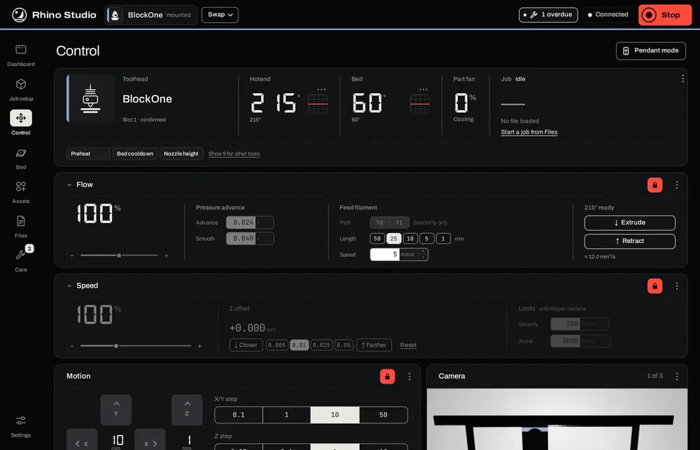
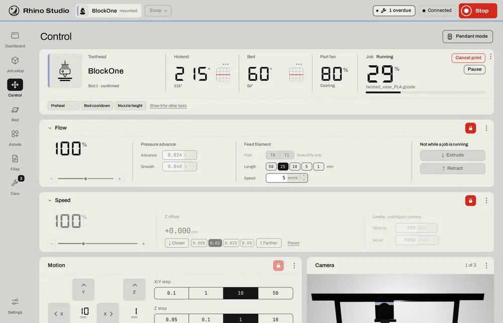
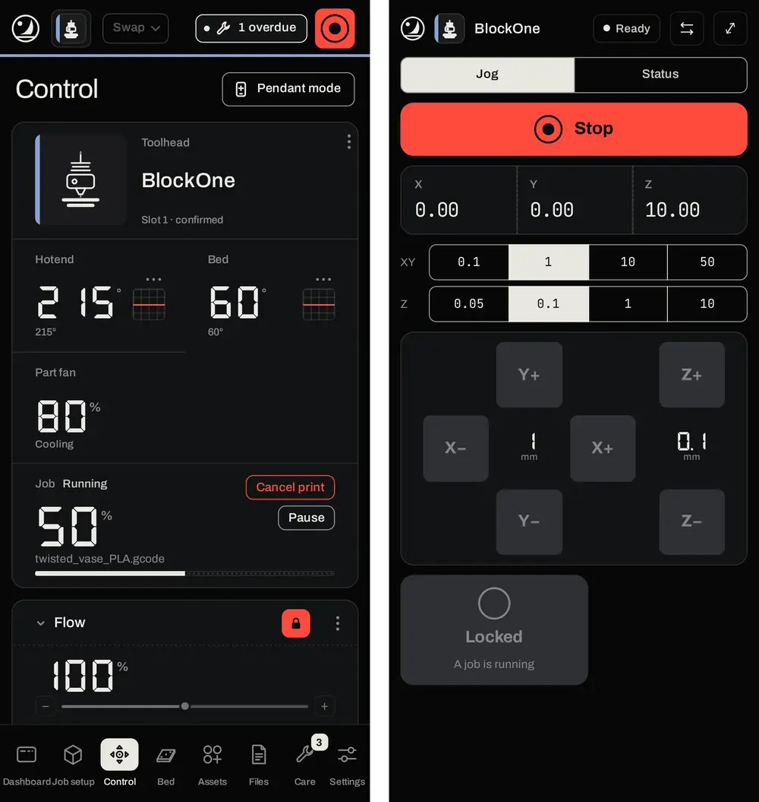
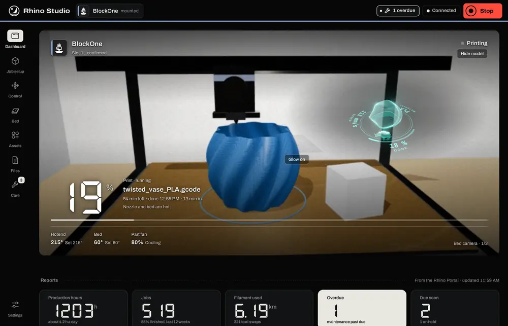

Rhino Studio is the Rhino's main screen. It prepares jobs from your models and drawings, previews them, runs the machine, tunes the print heads, and keeps track of the tools, the hardware and the maintenance, all in one web page. It runs in any up-to-date browser on a computer, tablet or phone. The Rhino serves it, so there is nothing to install.
Open http://rhinostudio.local, or the Rhino's address followed by :5001, for example http://192.168.1.50:5001. Every release of the Tool Manager carries the matching Rhino Studio, so updating one updates both.

Stop sends Klipper's emergency stop (M112) at once, without asking. Klipper then shuts down and needs a restart; use it when something is going wrong, not to end a job. To end a job normally, use Cancel print.
Every command Studio sends is checked first. Anything that moves the machine, switches a tool's power, changes the mounted tool, restarts Klipper or starts a job opens a window saying what will happen, with the exact commands, and waits for Proceed. Heating and plain macros go straight through. The emergency stop never asks.
Panels that act on the machine live, such as jogging, live tuning, the bed's lead screws and system hardware, sit behind a red padlock. Press it to unlock. The panel turns red while it's live, and locks again by itself: after 60 seconds without a press, when you leave the page, when a job starts, when the tool changes, or when Klipper stops being ready.
Studio follows your device's light or dark setting. To choose one, or a theme of your own with its own colours, background picture and typefaces, open Settings › Appearance. In every look, red keeps one meaning: stop, or a panel that is live.

On a narrow screen the rail moves to the bottom and the panels stack in one column. Pendant mode, from the top of Control, turns a phone into a hand-held pendant: the position, step sizes, square jog keys and Stop. Jogging needs both hands: hold the Hold key with one thumb while you press a jog key with the other. Letting go of Hold stops the next press. The ⇄ button swaps the keys round for left-handed use. Jogging stays locked while a job runs.

The Dashboard is for looking, not for running the machine: it has no machine buttons apart from Stop in the top bar, so it is safe to leave open on a screen in the workshop. The camera fills the page. The tool is at the top left, the machine's state at the top right, and notices at the bottom left; a red notice needs you, and is answered on Control. A row of figures from the Portal's reports runs along the bottom.
While a job runs, the job's progress, file, time left and finish time show in large type. For a print, the part being printed appears as a turning hologram over the camera: what's done glows, the layer being printed is an amber line, and the rest is a faint outline. The dial under it shows how much is done, the head's speed and the material. Drag the hologram to turn it; Hide model hides it on that screen.

Cameras are there to watch, not to keep you safe: a picture can freeze or lag. Studio pauses a camera when it isn't on screen.